Constructing Half Persian Braid Sheet
This article is due for revision -- as soon as I get my act together, we'll have nicer pictures, I promise!
This was a weave I came up with while I was on a Persian spree. It actually evolved from my first (failed) attempt to sheet HP 5:1. Basically I came up with an extremely dense ¾ Persian 10:1, and while that couldn’t become a sheet, I guessed that it could probably be done with the considerably looser HP 3:1. The principle behind HP Braid Sheet is that it is basically like HP 3:1 sheet 6:1, it’s just built in the other direction (vertically) so that when you look at a sheet, you are looking at the sides of a bunch of HP 3:1 chains stacked on top of each other. Because they are stacked this way, you can see the characteristic braids on the sides of the HP chains, hence the name.This tutorial shows how to work off a piece of ¾ Persian 6:1 to create Half Persian Braid Sheet the way I made it when I first discovered it. It requires a working understanding of the basic Persian weaves (FP, HP, and ¾ P), plus an idea of AE and TE connections. If you do not understand AE and TE, this is how they work:
| 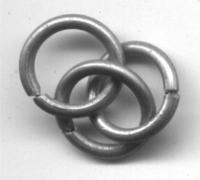 AE: the bottom ring goes around the overlap (or “eye”) formed by the two top rings. |
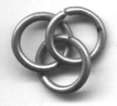
TE: the bottom ring goes through the overlap formed by the two top rings. |
On to the weave itself. I used 16 ga 7/16” ID galvy for this tutorial, which is just about minimum AR. You may want to step it up to 16 ga 15/32” or higher.
Step 1: Make a short chain of ¾ Persian.
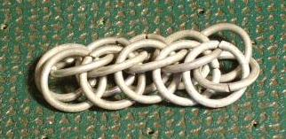
Step 2: This may sound a little odd. Get the chain so that the open side (the “missing” row that would otherwise make Full Persian) is facing you. Lay it down and sort of slide the top rings away from you, across the rest of the weave. Depending on your AR they may not “slide” very far, the point is just to get them protruding as a ridge on the other side. That “ridge” is what you will build the sheet off of.
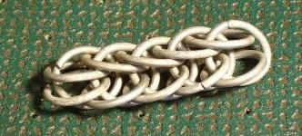 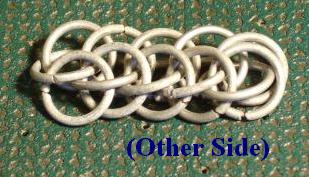
You should see the braids (some people call them arrows too) forming now.
Step 3: This is not a hard step. Add a ring. (It’s in red; all new rings will be in red from now on).
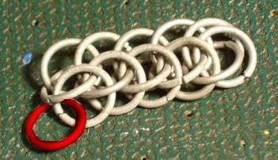
Step 4: Whew, now that you made it past Step 3, it’s time to add another ring. This will go AE, then TE. I marked them out in pretty colors to make it clearer.
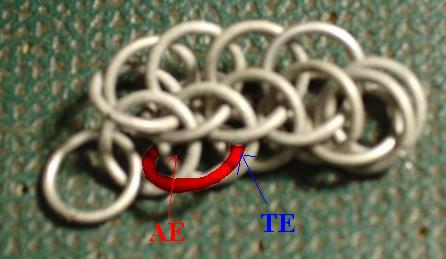
Step 5: In the same manner as Step 4, finish the row using AE then TE connections. Each ring should go UNDER the preceding one, or you will end up with a different weave.
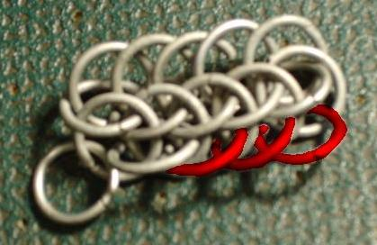
Step 6: Time to start on the next row. Add a ring connected in AE style, through the first two rings of the preceding row.
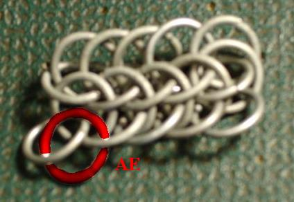
Step 7: Finish the row, this time connecting in the opposite manner of Step 5. Each ring should go TE then AE, and be BEHIND (or on top of, for consistency’s sake) the preceding ring.
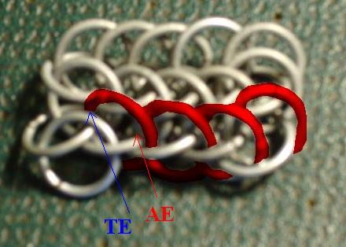
Step 8: You may have noticed that the very top row, which was part of the original chain, is different from the rest when viewed from the back (it is showing the back rather than the side of the sheet). Now is a good time to remove just that top row, so that everything is consistent.
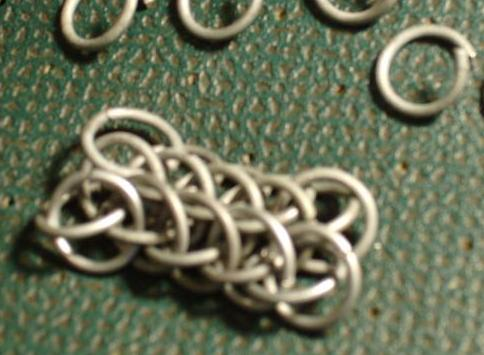
Step 9: Rinse and repeat, steps 3 thru 7. You don’t need to remove the top row every time now, the problem has been taken care of and it would be counter-productive. :)
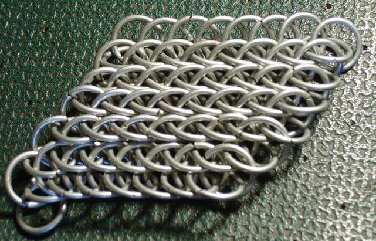